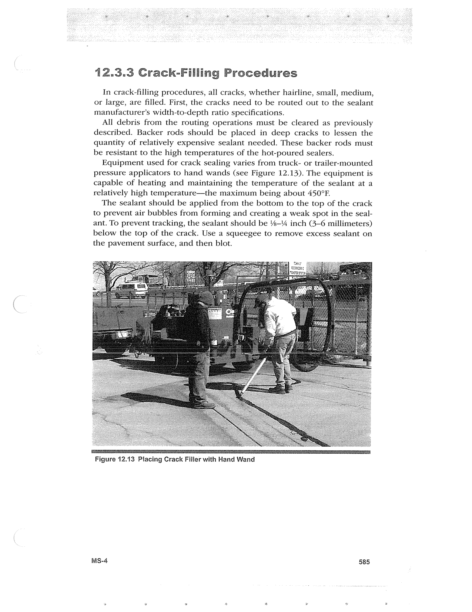

PDF page 619 · book page sequence 585


Searchable transcription
Unproofread OCR · 184 detected words; mean OCR confidence 95.57. Check technical values, symbols and table columns against the scan.
12.3.3 Crack-Filling Procedures
In crack-filling procedures, all cracks, whether hairline, small, medium, or large, are filled. First, the cracks need to be routed out to the sealant manufacturer’s width-to-depth ratio specifications.
All debris from the routing operations must be cleared as previously described. Backer rods should be placed in deep cracks to lessen the quantity of relatively expensive sealant needed. These backer rods must be resistant to the high temperatures of the hot-poured sealers.
Equipment used for crack sealing varies from truck- or trailer-mounted pressure applicators to hand wands (see Figure 12.13). The equipment is capable of heating and maintaining the temperature of the sealant at a relatively high temperature—the maximum being about 450°F.
The sealant should be applied from the bottom to the top of the crack to prevent air bubbles from forming and creating a weak spot in the seal- ant. To prevent tracking, the sealant should be %—'4 inch (3-6 millimeters) below the top of the crack. Use a squeegee to remove excess sealant on the pavement surface, and then blot.
Figure 12.13 Placing Crack Filler with Hand Wand
Ms-4 585